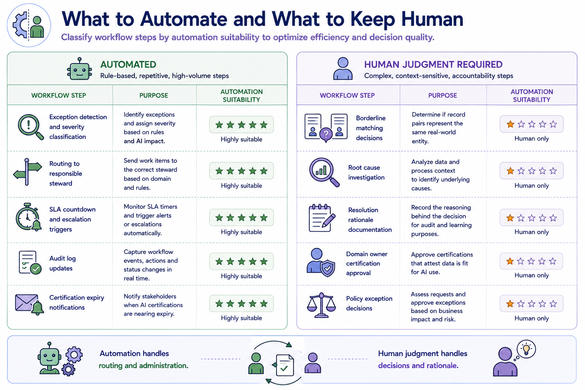
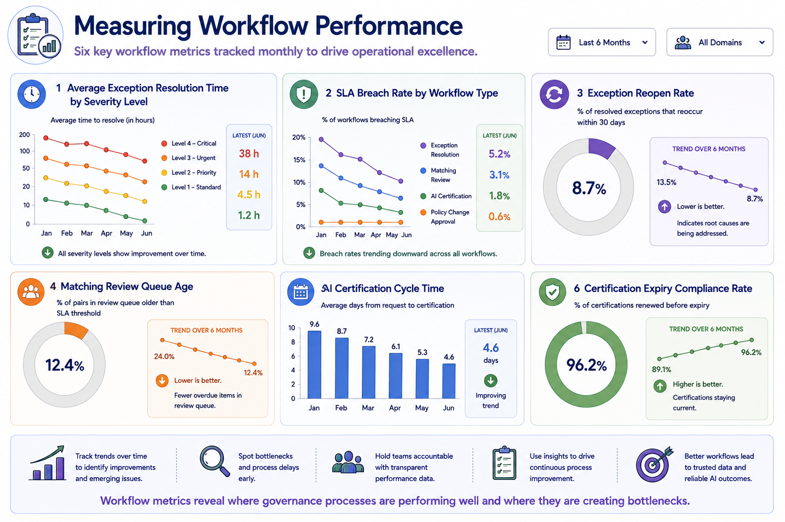
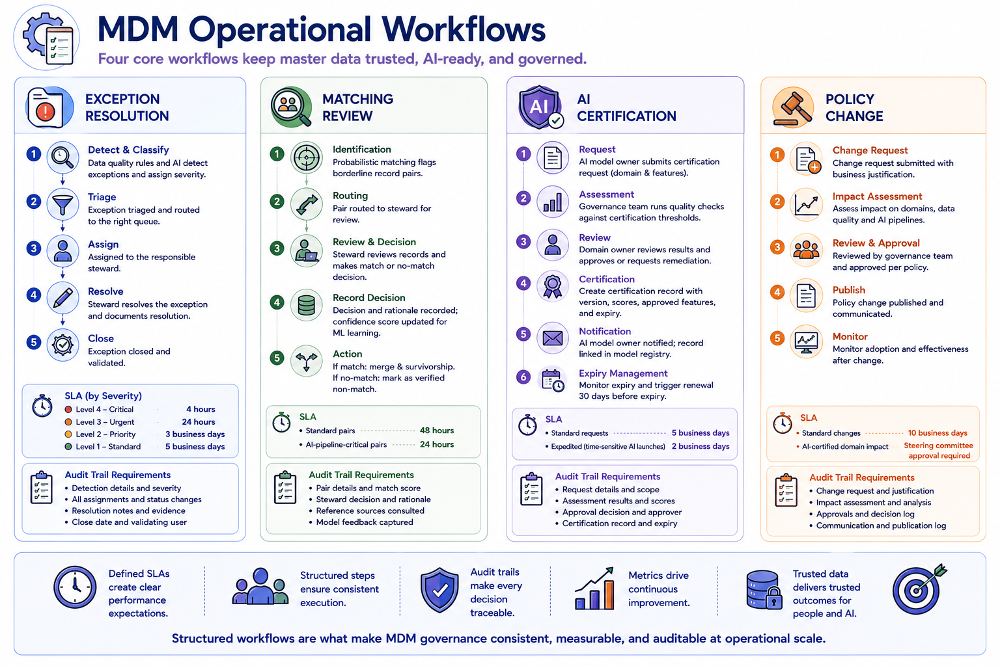

Workflow Management
Module support notes
Workflow Automation in MDM Operations
Workflow automation in MDM operations should be applied to the administrative and routing components of governance workflows — detection, classification, routing, SLA tracking, escalation triggering, and audit logging — while preserving human judgment for the decisions themselves.
Organizations that over-automate governance decisions, using ML recommendations as auto-approvals for exception resolution or matching review, consistently produce lower-quality governance outcomes than those that use automation to accelerate the human judgment process rather than replace it. This distinction matters particularly for AI certification workflows, where the domain owner's approval should represent genuine human accountability for the quality of data being certified for AI use — not an automated rubber stamp based on threshold-passing scores.
Note
Automation handles routing and administration. Human judgment handles decisions and rationale. Automate: exception detection and severity classification, routing to responsible steward, SLA countdown and escalation triggers, audit log updates, and certification expiry notifications. Keep human: borderline matching decisions, root cause investigation, resolution rationale documentation, domain owner certification approval, and policy exception decisions.

Workflow Metrics and Continuous Improvement
Workflow performance metrics serve two purposes — operational accountability and continuous improvement. Accountability metrics show whether SLAs are being met and where the governance process is bottlenecking. Continuous improvement metrics reveal systemic patterns — a high exception reopen rate suggests that resolutions are addressing symptoms rather than root causes; a long AI certification cycle time suggests that the certification process has more friction than the AI teams it serves can absorb.
Reviewing workflow metrics monthly and using them to drive process improvements is one of the simplest and most effective continuous improvement practices available to an MDM operations team.
Tip
Track six workflow metrics monthly: average exception resolution time by severity, SLA breach rate by workflow type, exception reopen rate, matching review queue age, AI certification cycle time, and certification expiry compliance rate. Each metric reveals a different failure mode — together they give the operations team a complete picture of where governance is working smoothly and where it is creating the friction that drives AI teams toward ungoverned workarounds.

Structured workflows are what make MDM governance consistent, measurable, and auditable at operational scale — without them, governance exists only in policy documents rather than in practice.
